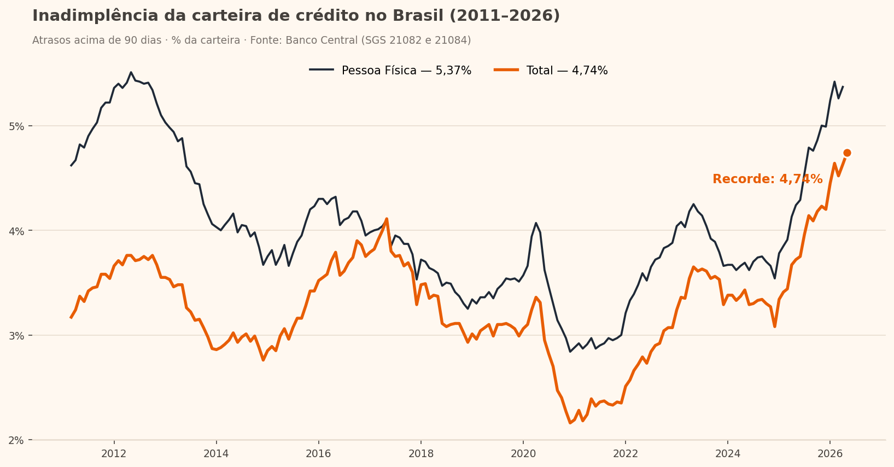

Pipeline em Python que extrai, trata e analisa 15 anos de dados públicos do Banco Central — e encontra um achado que importa para qualquer negócio que concede crédito.

Em maio de 2026, a inadimplência da carteira total de crédito atingiu 4,74% — o maior valor desde o início da série do Banco Central, em março de 2011, superando o pico pré-pandemia de 4,11% (mai/2017). A alta é puxada por Pessoa Física: 5,37% em abril de 2026, avanço de +1,24 p.p. em 12 meses e maior patamar desde 2012.
Para quem concede crédito, isso significa mais provisão, mais esforço de cobrança e mais valor em políticas de recuperação bem calibradas — exatamente o tipo de problema que eu resolvo no dia a dia.
Respondo em poucas horas. Primeira conversa sem compromisso.
Chamar no WhatsApp →